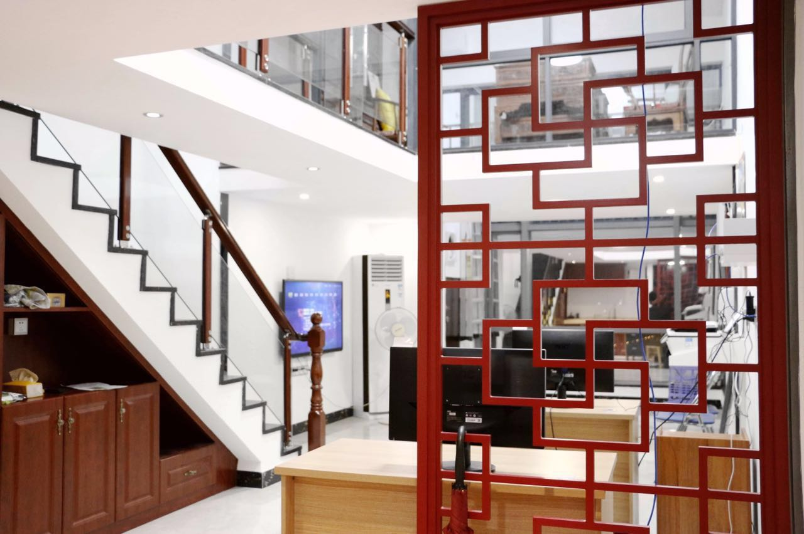
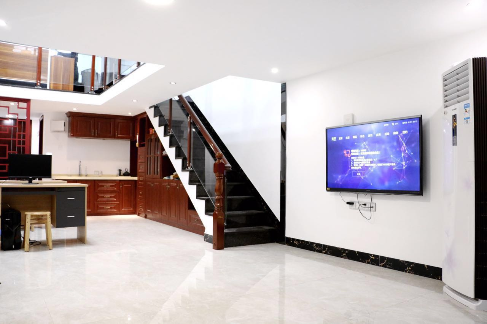
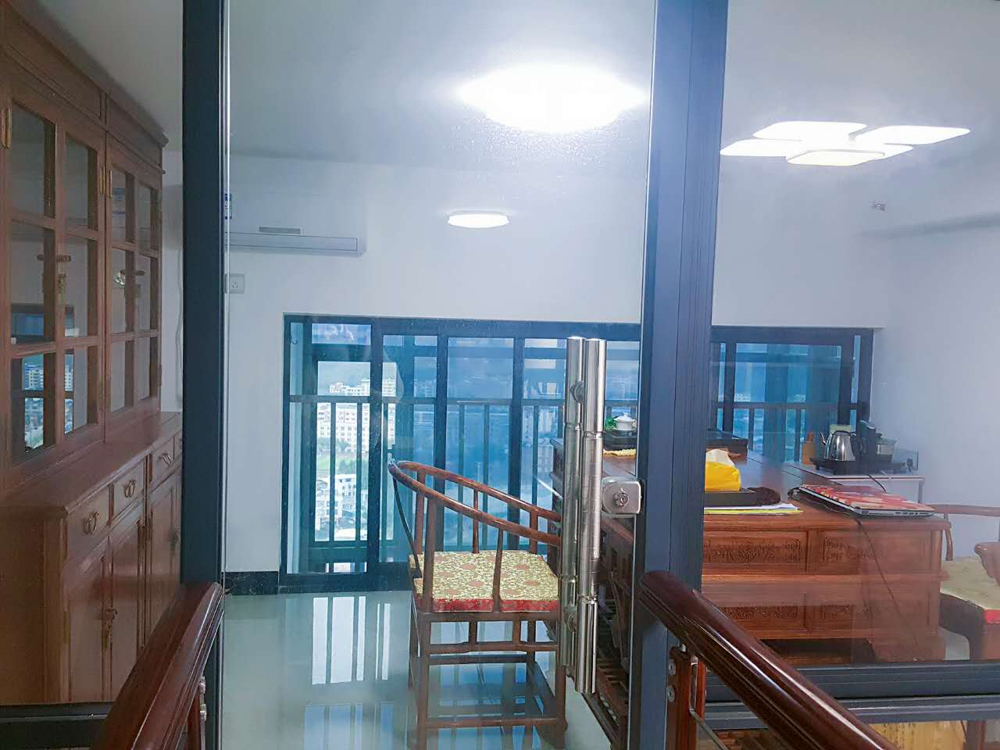

|  | 广州方盈投资有限公司前身为华商学子2014年自主创立的金融工作室，以其现全的教育体系与完善的外汇交易架构，培养了100+学子，现今大多就职于国内民营银行，保险，证券等机构，为学子创造了一个独到的就业培训环境与正确的金融思维理念。 |
|  | 2016年，正式注册成立广州方盈投资有限公司。 |
|  | 依据企业创始人对金融行业的前瞻性判断与敏锐的商业嗅觉，公司的战略发展核心定义为国际主权货币对（外汇）程序化智能交易（EA），以及有所衍生出来的混合标的资产管理，金融服务，程序定制开发，经纪代理等业务。 |